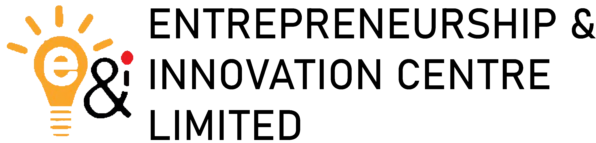

Identify Innovators
Discover high-potential innovators developing solutions for Nigeria's energy sector.
Building Nigeria's next generation of energy innovators.
The Tech-Innovation Challenge (TIC) is a strategic initiative of the Nigerian Content Development & Monitoring Board (NCDMB) aimed at strengthening Nigeria's innovation ecosystem by supporting technology-driven solutions that advance the oil, gas, and energy sectors.
TIC provides a platform for innovators, researchers, and entrepreneurs to showcase their ideas, receive expert mentorship, and gain access to funding and industry networks.

Discover high-potential innovators developing solutions for Nigeria's energy sector.
Develop skills through structured mentorship and technical training programmes.
Support prototype development and market readiness for viable innovations.
Enable indigenous technology solutions that advance Nigerian content development.
The Tech-Innovation Challenge is owned and led by the Nigerian Content Development & Monitoring Board (NCDMB).
The programme is powered by the Entrepreneurship & Innovation Centre Ltd (EICL), serving as the official Programme Consultant responsible for design, coordination, and implementation.
"Empowering People, Transforming Industries."

Powered by EICLSee the programme structure, timeline, and key events for the maiden edition.